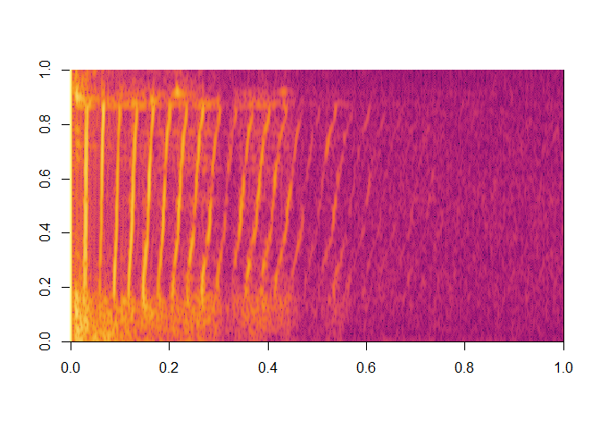

ProTracker is music sequencer software from the 1990s on the Commodore Amiga (see screenshot of version 2.3a on the right). This R package is designed to read, process and play ProTracker module audio files.
Installation
Get CRAN version
install.packages("ProTrackR")Get development version from R-Universe
install.packages("ProTrackR", repos = c('https://pepijn-devries.r-universe.dev', 'https://cloud.r-project.org'))Usage
The package comes bundled with a tiny chiptune, which can easily be played like so:
library(ProTrackR) |>
suppressMessages()
data("mod.intro")
playMod(mod.intro, verbose = FALSE)There are plethora of module files available on-line as well. Below you can see how you can download such a file. It also show how you can select an audio sample (number 25) from the module and calculate its power spectrum:
elekfunk <- read.module("https://api.modarchive.org/downloads.php?moduleid=41529#elektric_funk.mod")
spec <- elekfunk |>
PTSample(25) |>
waveform() |>
tuneR::powspec(wintime = 0.1, steptime = 0.001)
image(log10(spec), col = hcl.colors(100, palette = "Inferno"))
While we are at it, why not play it:
playMod(elekfunk, verbose = FALSE)Developmental status
It has been a decade since the initial release of this package. Since it’s release a lot has changed in R and in my skill set. I still have plans for this package, but this requires drastic changes. Therefore, I will only apply minimal maintenance to this package. Meanwhile I will work on a complete overhaul which will be released in due time as a new package. This new package will:
- have the same or similar features as the current package.
- will implement modern R features and try to adhere to tidyverse principles.
- implement rendering procedures in C++ giving the package a speed boost.
But until then, please enjoy the current package as is.